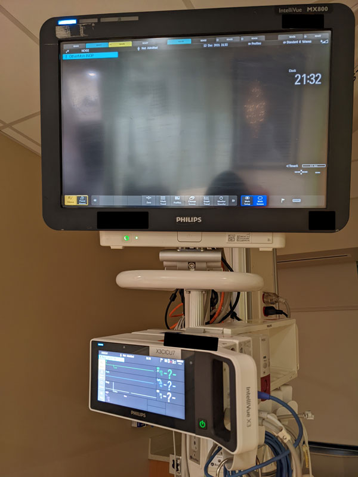

Bedside Monitor
Not Displaying

In the image above you can see the central monitor is not displaying patient vitals. However the X3 is displaying patient data.
There are two possible solutions to this technical issue. The first one is to ensure that the X3 is plugged in properly. If the X3 is plugged in & patient data is still not displaying properly, move on to the next step.
The next solution is also simple. Make sure this cable is plugged in.
If you attempted both solutions and the monitor is still not displaying data it is possible that the cable shown in the second solution has gone bad. If that is the case contact biomed.
Central Monitor
Not Displaying
So the patient vitals are displayed on the bedside monitor but not the central monitor. Check to ensure that the ethernet cable (orange cable) is plugged into the back of the monitor but also into the outlet on the wall behind the monitor. If everything is plugged in properly the cable may be faulty. Contact biomed.
5-Lead displaying
as 3-lead
The patient is on a 5-lead, but the monitor is only displaying as a 3-lead. There are a few different things you can do to troubleshoot. First ensure the patient is using the correct lead setup with the correct electrodes. If the issue persists the next steps involve replacing equipment until the faulty piece is found. Replace each piece in this order:
- EKG Cable
- Piink adaptor (if applicable)
- X2/X3
- Lead setup
(if it was not replaced in the initial troubleshooting, sometimes a wire breaks in the setup.)
If you are unable to solve the issue contact biomed.
3-Lead displaying
as 5-lead
The patient is on a 3-lead, but the monitor is displaying as a 5-lead. First ensure the patient is using the correct lead setup with the correct electrodes. If the patient was previously on a 5-lead the electrodes have to be changed out when switched to a 3-lead.
If the issue persists the next step is to try and reset the patient profile- which must be done at bedside.
Vitals Not
Transferring to Epic
Vitals are not crossing over into Epic. First ask the RN to make sure the box labeled “hide vitals” is not checked at the top of the patient’s chart in Epic. If that does not solve the issue follow the next steps. Ask the R.N if she is the only one experiencing this issue. Sometimes there are technical issues with Epic and our network that prevent data transferring- so this may be an IT issue (helpdesk).
If no one else is experiencing this issue, have the R.N get the X2 or X3 number and ensure the equipment is “paired” correctly.
If the patient had OR in their room or went to OR and then returned to their room, make sure the patient has been "pulled" back to their room in Epic.
Lastly if the patient came in as a trauma through the E.D that could impact how data is transferred. The R.N would need to contact the E.D to get the problem solved.
Monitor Alarming
Check Patient I.D
The monitor may alarm when there are conflicts with patient I.D.
To clear this alarm select "Manage Patient". Next look at the equipment paired to the bedside monitor. Confirm the X2 or X3 number with the nurse at bedside. If the number does not match, remove the device that is paired using the arrows and add the correct x2 or x3- again using the arrows. Once this is done ask the nurse to unplug the X2 or X3 from the bedside monitor and plug back in. This will clear the alarm.
If the X2 or X3 is intially paired correctly then just have the nurse unplug the X2 or X3 from the bedside monitor and plug back in to clear the alarm.
Patient on Tele-pack
O2 Waveform not Displaying
Sometimes when you put a patient on a Tele-Pack the o2 waveform stops displaying.
When this happens select "Measurements", next select "SpO2" in the far left column. Then you should see two options on the far right under SpO2, this should be the tele-pack number and the bedside number. Select the tele-pack number. Next select "Mode" and choose the option "continous".

Now the pleth will display on the central monitor for the patient hooked up to the tele-pack. In this example the patients sat probe was off.
Monitor Alarm
No Data Tele
You may see this alarm becuase there are multiple devices paired to the bedside monitor.
To clear this alarm select "Manage Patient" Next look at the devices paired and remove the the unnecessary devices using the arrows. The ICU's use X2s & X3s so you may need to contact the nurse to find out which one is in the room.

Monitor Alarm
Check Sync-Out Cable
First check the cable connections in the back of the monitor to ensure each are plugged in correctly.
With this particular alarm I have found that it is usually the cable in the image below. What I ended up doing that cleared the alarm was taking this cable from another monitor not in use and using it as a replacement. Then I put in a biomed request for the monitor with the faulty cable.
However this should not be practiced routinely. If you get this error just double check your cable connections and contact biomed.